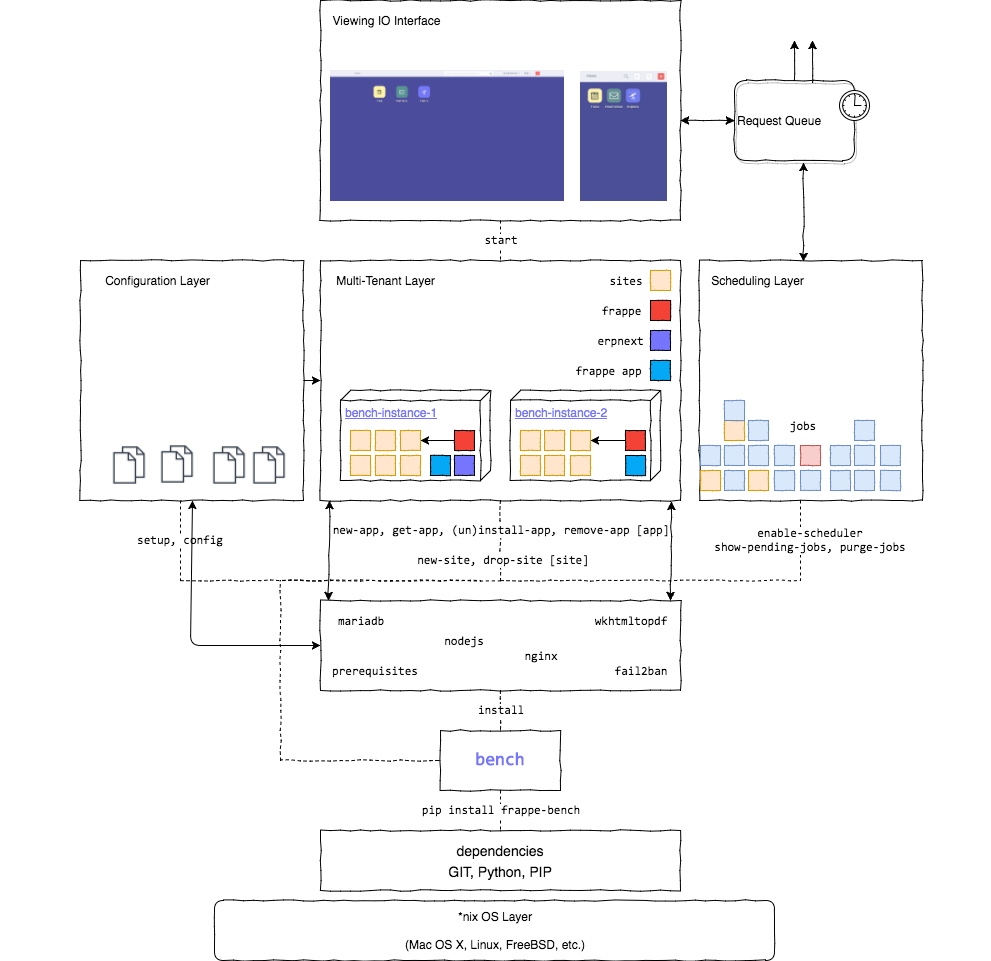

Tài liệu phân tích và mô tả toàn diện: Tái hiện 100% sơ đồ kiến trúc hạ tầng tổng quan từ bức ảnh gốc, phân tích ý nghĩa từng khối hộp, từng màu sắc, từng mũi tên và câu lệnh điều khiển; đi sâu vào cơ chế Runtime và hạt nhân dữ liệu DocType.
Đối sánh trực quan giữa bức ảnh gốc của hệ sinh thái Frappe Bench và bản vẽ Vector SVG sắc nét, đầy đủ từng mũi tên, màu sắc, khối và lệnh điều khiển.

Mô tả cặn kẽ chức năng kỹ thuật, lý do tồn tại và cơ chế hoạt động của từng dòng chữ, từng khối hộp trong sơ đồ trên.
*nix OS Layer: Hệ thống được thiết kế chạy nguyên bản trên các bản phân phối Linux (Ubuntu, Debian, Alpine trong Docker) hoặc macOS. Lý do yêu cầu nhân *nix:
dependencies (GIT, Python, PIP):
Được cài đặt bằng lệnh: pip install frappe-bench. Sau khi cài, người dùng chạy lệnh bench setup prerequisites để Bench tự động liên kết với 5 dịch vụ hệ thống:
Hệ quản trị CSDL quan hệ chính thức. Tối ưu cho định dạng bảng InnoDB, chuỗi utf8mb4.
Biên dịch JS/CSS (Vite/Rollup) và vận hành máy chủ WebSocket thời gian thực (Socket.IO).
Cổng Reverse Proxy điều hướng tên miền đa Site, xử lý SSL và trả trực tiếp static assets.
Thư viện chuyển đổi báo cáo HTML/CSS sang file PDF in ấn chuẩn (Hóa đơn, Phiếu xuất kho).
Bảo mật hệ thống: Tự động khóa IP khi phát hiện hành vi dò quét mật khẩu đăng nhập brute-force.
Được sinh tự động qua lệnh bench setup config. Thay vì lập trình viên phải sửa tay từng cấu hình web/worker, Bench đọc danh sách sites và tự xuất ra 4 tệp chính:
Khả năng chạy nhiều bench-instance độc lập trên cùng 1 server:
Biểu thị ma trận các ô vuông màu (Jobs):
enable-scheduler, purge-jobs.
Khi quản trị viên chạy lệnh bench start, toàn bộ các dịch vụ WSGI, Redis, Worker được đánh thức để mở ra Viewing IO Interface:
Là tầng đệm điều phối lưu lượng giao tiếp:
Cách thức phối hợp bên dưới hệ thống khi một yêu cầu HTTP gửi đến hoặc một tác vụ chạy ngầm được kích hoạt.
Lưu trữ siêu dữ liệu DocType (DocType schema), quyền hạn người dùng (User Roles & Permissions), cài đặt hệ thống và Session trên RAM. Giúp Desk phản hồi tức thì mà không cần truy vấn lại MariaDB.
Đóng vai trò Message Broker cho Python RQ (Redis Queue). Phân phối công việc cho 3 hàng đợi: short (dưới 5 phút), default, và long (báo cáo lớn, AI agent).
Kênh truyền tin Pub/Sub kết nối giữa Python Backend và Node.js Socket.IO Server. Đẩy thông báo chuông, cập nhật trạng thái đơn hàng và khóa người xem chứng từ (Document Viewers) thời gian thực.
Trái tim của Frappe: Kiến trúc hướng siêu dữ liệu (Metadata-Driven Architecture).
DocType (Document Type) là một thực thể mô tả siêu dữ liệu đại diện cho một đối tượng nghiệp vụ (như Khách hàng, Sản phẩm, Đơn mua hàng). Bản thân DocType quy định toàn bộ từ cấu trúc cột CSDL, giao diện nhập liệu đến quyền truy cập.
CREATE TABLE thủ công.
Frappe tự động ánh xạ DocType thành bảng vật lý trong MariaDB với tiền tố bắt buộc: tab[Tên DocType]. Ví dụ: DocType Purchase Order thành bảng tabPurchase Order.
| Kiểu Trường DocType (Fieldtype) | Kiểu Cột MariaDB (SQL Type) | Mô Tả & Ý Nghĩa Nghiệp Vụ |
|---|---|---|
| Data, Select, Dynamic Link | VARCHAR(140) / VARCHAR(255) | Văn bản ngắn một dòng, danh sách chọn cố định. |
| Link (Khóa ngoại logic) | VARCHAR(140) | Trỏ đến cột name của DocType đích, kiểm tra toàn vẹn ở tầng ORM. |
| Currency, Float, Percent | DECIMAL(21, 9) | Độ chính xác dấu phẩy động tài chính, chống làm tròn sai lệch tiền tệ. |
| Int, Check (Boolean) | INT(11) | Số nguyên, ô chọn bật/tắt (0 hoặc 1). |
| Table (Child Table - Bảng Con) | Tạo bảng riêng: tab[Child DocType] |
Bảng chi tiết liên kết với cha qua: parent, parentfield, parenttype. |
DATETIME(6). Thời điểm tạo và cập nhật gần nhất.Mô hình đồng bộ 4 chiều từ JSON Schema ➔ Controller Python/JS ➔ Vòng đời Hooks ➔ Bảng MariaDB và REST API.
Frappe nạp dữ liệu từ CSDL vào đối tượng tài liệu trong RAM (self).
Kiểm tra điều kiện logic, tính toán lại tổng tiền, chặn các giá trị sai lệch trước khi ghi đĩa.
Frappe ORM tự sinh câu lệnh SQL INSERT INTO hoặc UPDATE vào bảng MariaDB.
Dành cho chứng từ submittable. Chuyển docstatus = 1, kích hoạt ghi sổ cái kế toán và sổ kho.
Ghi vĩnh viễn dữ liệu xuống đĩa cứng. Nếu xảy ra lỗi ở bất kỳ bước nào, gọi rollback() để bảo toàn dữ liệu.